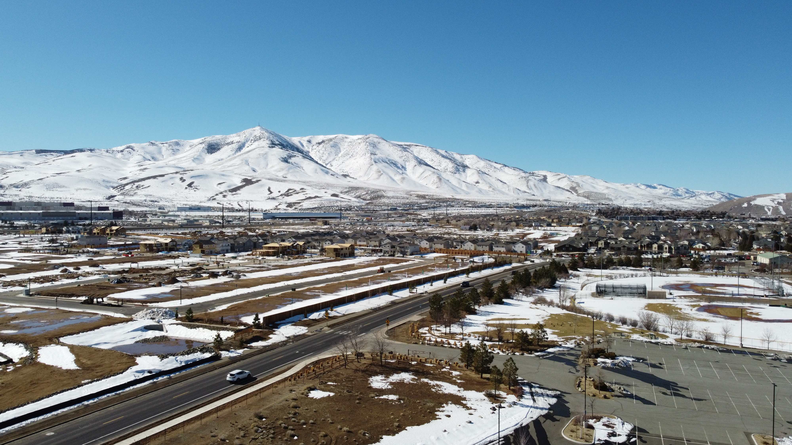
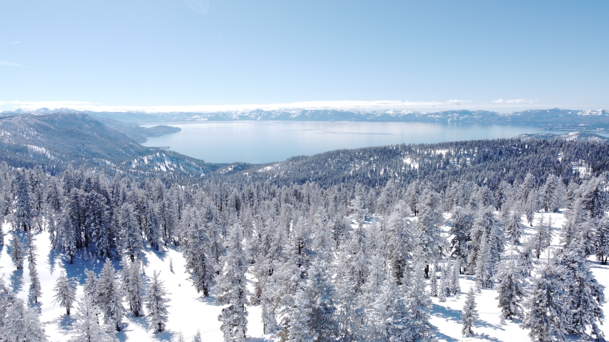
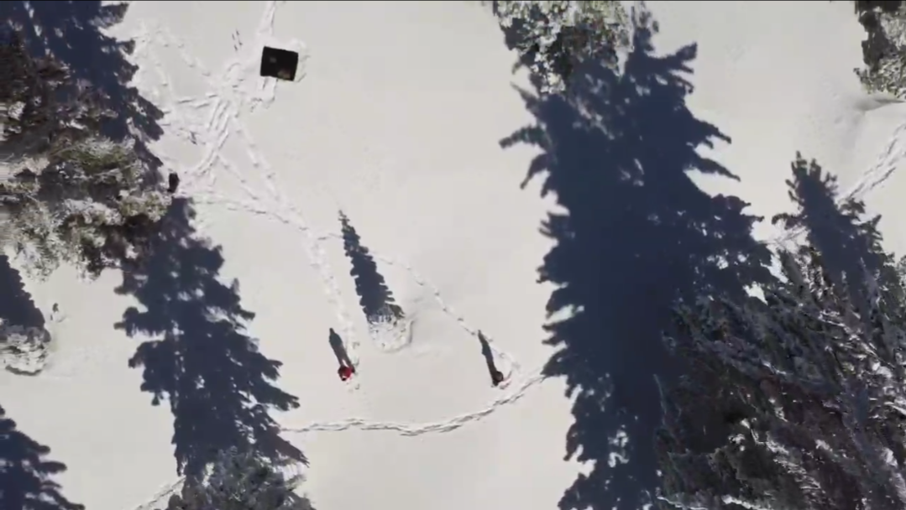

Drone For Fun
Drone Flight: Control Configuration and Settings

Just putting hours on the drone. Class G uncontrolled airspace, baseball field to myself, level 1 stuff. Peavine Mountain was nice enough to look amazing in the snow, but this flight wasn't about about photography.
Configuring the drones controls is a big part of developing confidence in flight. I have no experience flying anything but I have put some time in on an xbox controller, so after a bit of playing around I found which setting felt more intuitive than the rest. After commiting to my configuration, it was time to drive muscle memory into my hands. Orbits were the main focus. Circling a subject in a smooth flight.
Just putting hours into flying is important, especially if I want any to get any good videos, and it is better to learn in a low stress environment. I couldn't spend 3 batteries just spinning in circles though.
A big open field in a sparsly populated park is exactly where you want to learn how to deal with a problem. Digging deep into my drones settings I started searching for anything that could go wrong. Calibration request mid flight? Need to cancel a forced landing? Payload sensors? I want to know the answer to these things before I'm over water.

Drone Flight: Chickadee Ridge, Lake Tahoe

A 90 minute round trip showshoe hike to a popular spot around the Lake Tahoe ridge. This is the first day of sun after nearly a week of heavy snow.
This was my first attempt to get any usable shots so I figured I should get as much help from the scenery as possible. Setting up a launch pad for the drone in the snow, in an area only accessable by snowshoe or ski was more challenge than I wanted being such a begginer, but the few shots I did get seemed worth the effort.
While conditions were good for flying, low wind speeds and temperatures just below 30 degrees F, it was fairly difficult to actually see with so many reflections off the snow. Manually configuring camera ISO and shutter speed was a must for getting any visuals from the drone. I also had to set up an easy to find black landing zone in the snow to help bring the drone back to home.
